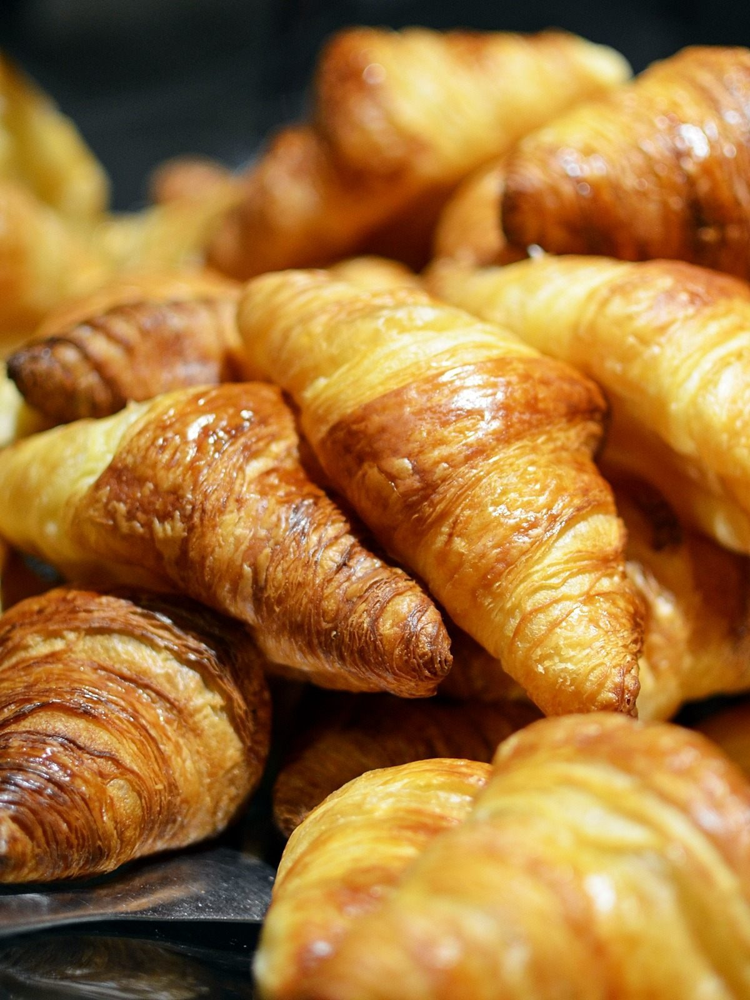
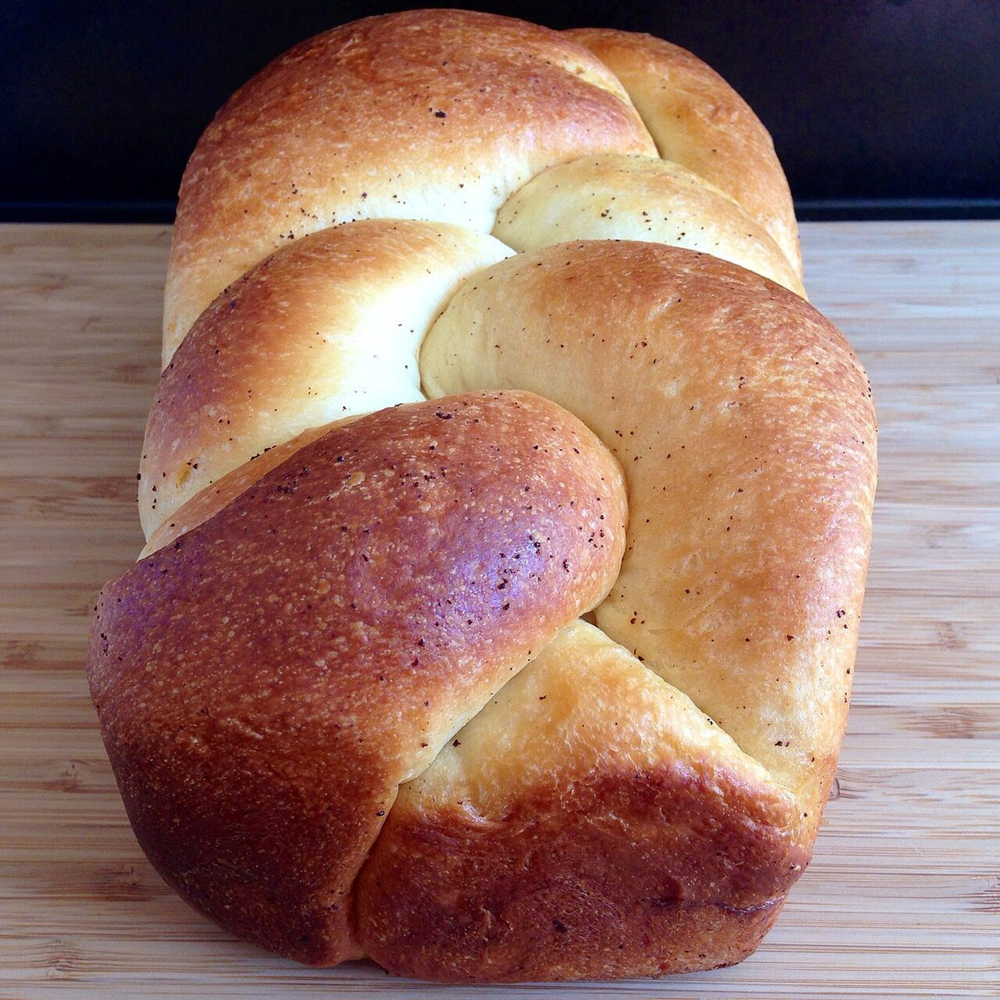
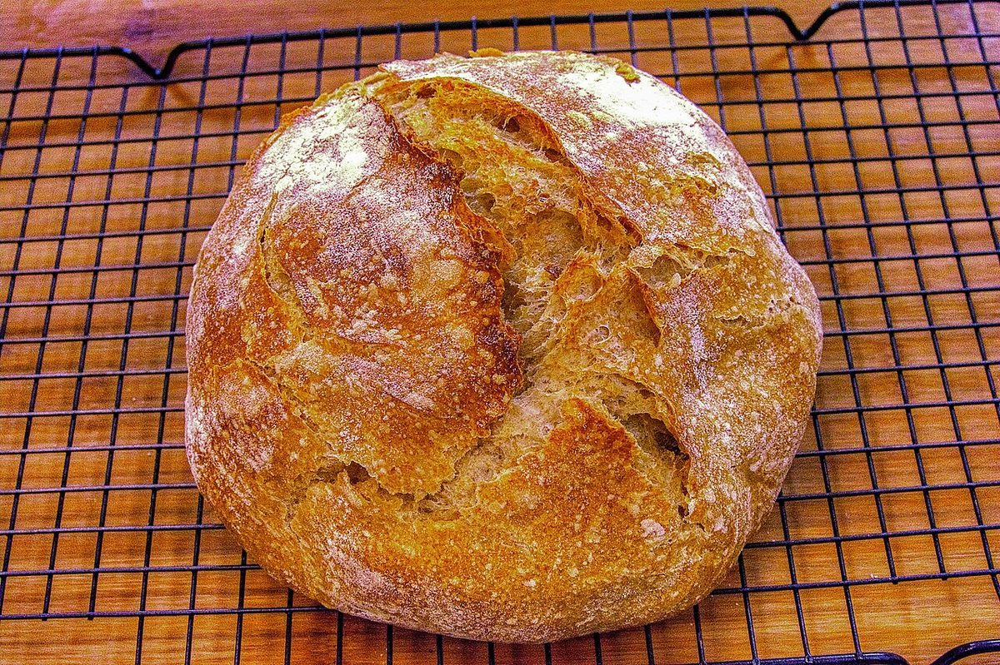

ひと口ごとの、ちいさな結び目
※このキャッチは制作側の案です。



パンを囲む時間は、ひとと、ひとを、ゆるくつなぐ。そんな見せ方を、制作側の案としてかたちにしました。
つなぐ
朝のひと口。誰かと分けるひと口。ちいさな結び目が、ひとつずつ増えていく。そんな時間を思い描いて、このページをつくりました。(制作側の案です)



写真はいずれもパンの種類や商品をお約束するものではありません。
お店の情報
- 営業時間
- 準備中(お問い合わせください)
- 定休日
- 準備中(お問い合わせください)
- 料金
- 準備中(お問い合わせください)
詳しくは、お電話かInstagramでご確認ください。